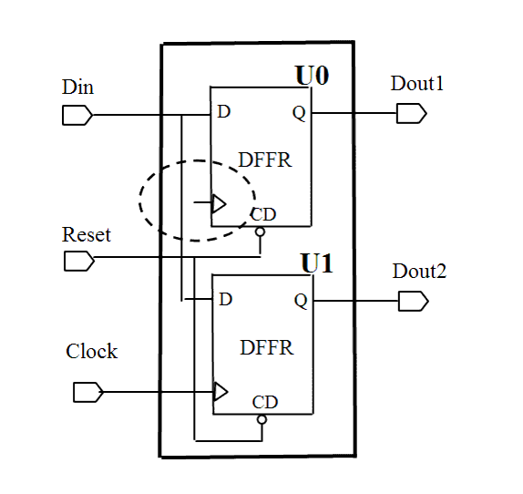

| Description | This rule verifies that all clock pins of standard cells are connected to a clock net. Most often, an unconnected clock pin is an error that must be fixed. Sequential cells with unconnected clock pins behave unpredictably. |
| Policy | DESIGN |
| Ruleset | CLOCKS |
| Language | VHDL/Verilog |
| Type | Hardware |
| Severity | Error |
This is an example of invalid Verilog code, followed by a circuit diagram that illustrates the problem:
module ntl_clk15_top (Clock, Reset, Din, Dout1, Dout2); input Clock, Reset, Din; output Dout1, Dout2; Date_sub U0 ( .Clock(); .Reset(Reset), .Din(Din), .Dout(Dout1); // NTL_CLK15 fires -- clock pin not connected to clock net (CP) //DFFR -- flip-flop with reset DFFR U1(.D(Din), .CP(Clock), .CD(Reset), .Q(Dout2); endmodule module Date_sub ( Clock, Reset, Din, Dout); input Clock_div, Reset, Din; output Dout; reg Dout; //DFFR -- flip-flop with reset DFFR I0(.D(Din), .CP(Clock), .CD(Reset), .Q(Dout)); endmodule